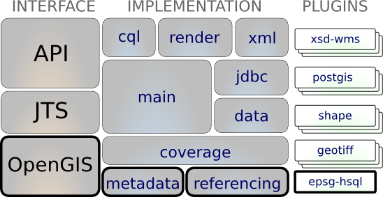

Referencing¶
Used to interpret referencing information allowing the determination of a location given a set of coordinates. Includes implementation of CoordinateReferenceSystem (CRS), conversion and transformation services.
The gt-referencing module is our first example that makes use of the plugin system provided by gt-metadata. It does require a little bit of care when configuring the module with appropriate epsg authority.
The gt-referencing module is responsible for:
- Implementation of the referencing interfaces from gt-opengis such as CoordinateReferenceSystem and MathTransform
- Providing a definition for common spatial reference system codes using plugins available on the CLASSPATH
This module is basically care and feeding for the CoordinateReferenceSystem class - and enough math to make it useful. Before you get too worried it is easy to use (There is a class called CRS that has helper methods for reprojection and stuff).
References
Maven:
<dependency>
<groupId>org.geotools</groupId>
<artifactId>gt-referencing</artifactId>
<version>${geotools.version}</version>
</dependency>
<dependency>
<groupId>org.geotools</groupId>
<artifactId>gt-epsg-hsql</artifactId>
<version>${geotools.version}</version>
</dependency>
<dependency>
<groupId>org.geotools</groupId>
<artifactId>gt-epsg-extension</artifactId>
<version>${geotools.version}</version>
</dependency>
Contents
Plugins:
EPSG plugins (choose only one to prevent conflict):
Unsupported plugins: